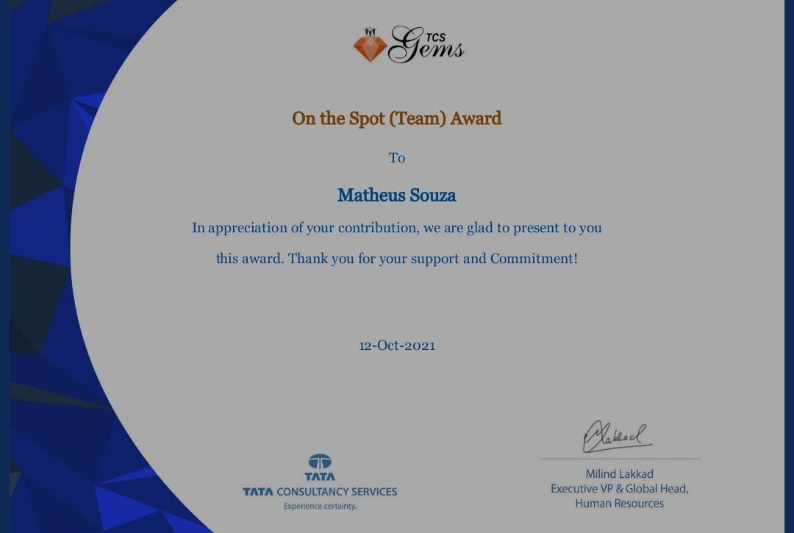

olá, eu souhi, i'm
Matheus Souza
Engenheiro de SoftwareSoftware Engineer
Atuo como desenvolvedor desde 2019 e já participei de projetos de grandes empresas como Petrobras, Oi, Bradesco e BRB. Hoje sou líder da equipe e referência técnica do backend do aplicativo de financiamento imobiliário do banco em que estou alocado.
I've been working as a developer since 2019, on projects for large companies such as Petrobras, Oi, Bradesco and BRB. Today I lead the team and am the technical reference for the backend of the home financing app at the bank I'm allocated to.
stack
- Java 8/11/17
- Spring
- MicrosserviçosMicroservices
- REST APIs
- AWS
- Docker
- OpenShift
- Oracle
- Redis
- JUnit
- Mockito
- Git
- Scrum
formaçãoeducation
-
MestradoMaster's degree UTFPR2026—2028
-
Pós-graduação em Arquitetura de SoftwarePostgraduate in Software Architecture FACUVALE2024
-
Pós-graduação em Inteligência ArtificialPostgraduate in Artificial Intelligence FACUVALE2024
-
Pós-graduação em Cloud ComputingPostgraduate in Cloud Computing FACUVALE2024
-
Especialização em JavaSpecialization in Java UTFPR2022—2023
-
Bacharelado em Ciência da ComputaçãoB.Sc. in Computer Science Unespar TCC: reconhecimento de placas de veículosThesis: vehicle license plate recognition →2016—2021
idiomaslanguages
- PortuguêsPortuguese
- InglêsEnglish
- EspanholSpanish
01 experiênciaexperience
-
Fóton atualcurrent
Engenheiro de SoftwareSoftware Engineer
Responsável pelo desenvolvimento backend do aplicativo de financiamento imobiliário de um grande banco.
Responsible for backend development of a major bank's home financing app.
principais atividadeskey responsibilities
- Projeto e desenvolvo microsserviços em Java e Spring, integrados via IBM ACE e API Gateway, com deploy em OpenShift.Design and build Java and Spring microservices, integrated through IBM ACE and API Gateway and deployed on OpenShift.
- Otimizei endpoints críticos, reduzindo o tempo de resposta em até 10x com refatoração direcionada e ajuste de performance.Optimized critical endpoints, cutting response times by up to 10x through targeted refactoring and performance tuning.
- Sou líder da equipe e principal referência técnica do sistema, além de referência de negócio para os desenvolvedores: fui o primeiro engenheiro alocado no projeto e acompanhei o crescimento do time.Team lead and main technical reference for the system, as well as the business reference for the developers: first engineer on the project, I've supported the team as it grew.
- Conduzi treinamentos sobre a arquitetura e as regras de negócio do sistema, acelerando a integração de novos desenvolvedores ao time.Ran training on the system's architecture and business rules, speeding up onboarding of new developers.
- Conduzo levantamento de requisitos, escrevo especificações técnicas, proponho soluções e entrego novos módulos. Também diagnostico e corrijo problemas em produção num ambiente bancário de alta disponibilidade.Lead requirements gathering, write technical specifications, design solutions and deliver new modules, and diagnose and fix production issues in a high-availability banking environment.
iniciativasinitiatives
- Agente de base de conhecimento com IA (Spring Boot + Gemini CLI + Obsidian), com interface no navegador, para o time consultar em linguagem natural a documentação dos microsserviços e dos fluxos IBM ACE.AI knowledge-base agent (Spring Boot + Gemini CLI + Obsidian) with a browser interface, letting the team query microservice docs and IBM ACE flows in natural language.
- Contract Builder: CLI em Python que gera contratos YAML a partir de specs OpenAPI/Swagger, para padronizar o desenvolvimento orientado a contrato.Contract Builder: a Python CLI that generates YAML contracts from OpenAPI/Swagger specs to standardize contract-first development.
tecnologiastechnologies
- Java 11/17
- Spring
- MicrosserviçosMicroservices
- IBM ACE
- API Gateway
- OpenShift
- Oracle
- JasperReports
- Redis
- AWS S3
- Graylog
- Docker
- JUnit/Mockito
- Git
- Scrum
-
Ebix
Engenheiro de SoftwareSoftware Engineer
Analista desenvolvedor em projetos de software de grande porte para a vertical de Seguros da Ebix.
Developer analyst on large-scale software projects for Ebix's Insurance vertical.
principais atividadeskey responsibilities
- Integração dos sistemas com mainframe.Integrating the systems with a mainframe.
- Levantamento de requisitos, proposta de solução e desenvolvimento de novos módulos para evolução dos sistemas.Requirements gathering, solution design and development of new modules to evolve the systems.
- Análise e correção de problemas ocorridos em ambiente produtivo.Analysis and fixing of issues in production.
- Refatoração de código complexo visando melhorar a performance.Refactoring complex code to improve performance.
tecnologiastechnologies
- Java 7
- Oracle
- DB2
- SVN
- Scrum
ecossistemaecosystem
- Spring Framework
- JasperReports
- Maven
- Java EE
- Java SE
- Struts
- WebSphere
- Tomcat
- Webservices
- REST API
- SOAP API
- Jira
- DBeaver
- Orientação a ObjetosObject-Oriented Programming
- Design PatternsDesign Patterns
-
Accenture
Engenheiro de SoftwareSoftware Engineer
Analista desenvolvedor em projetos de software de grande porte para a vertical de Telefonia da Accenture, atuando na unificação de dois sistemas diferentes.
Developer analyst on large-scale software projects for Accenture's Telecom vertical, working on unifying two different systems.
principais atividadeskey responsibilities
- Levantamento de requisitos, proposta de solução e desenvolvimento de novos módulos para evolução dos sistemas.Requirements gathering, solution design and development of new modules to evolve the systems.
- Análise e correção de problemas ocorridos em ambiente produtivo.Analysis and fixing of issues in production.
- Refatoração de código complexo visando melhorar a performance.Refactoring complex code to improve performance.
tecnologiastechnologies
- Java 7
- JSF
- Oracle
- Git
- Scrum
ecossistemaecosystem
- Spring Framework
- Hibernate
- JPA
- JasperReports
- Maven
- Java EE
- Java SE
- Tomcat
- HTML
- CSS
- Jira
- DBeaver
- Orientação a ObjetosObject-Oriented Programming
- Design PatternsDesign Patterns
-
TCS
Trainee
Analista desenvolvedor em projetos de software de grande porte para a vertical de Energia da TCS.
Developer analyst on large-scale software projects for TCS's Energy vertical.
principais atividadeskey responsibilities
- Levantamento de requisitos, proposta de solução e desenvolvimento de novos módulos para evolução dos sistemas.Requirements gathering, solution design and development of new modules to evolve the systems.
- Análise e correção de problemas ocorridos em ambiente produtivo.Analysis and fixing of issues in production.
- Refatoração de código complexo visando melhorar a performance.Refactoring complex code to improve performance.
tecnologiastechnologies
- Java 7/8/11
- Angular
- Oracle
- Git
- SVN
- RTC
- Scrum
ecossistemaecosystem
- Spring Framework
- REST API
- Webservices
- Hibernate
- JPA
- JasperReports
- Maven
- Java EE
- Java SE
- WebLogic
- Tomcat
- SQL Server
- HTML
- CSS
- JavaScript
- jQuery
- Bootstrap
- Jira
- IntelliJ IDEA
- SQL Developer
- DBeaver
- Orientação a ObjetosObject-Oriented Programming
- Design PatternsDesign Patterns
reconhecimentorecognition

On the Spot (Team) Award
Prêmio concedido pela TCS em reconhecimento à contribuição, ao apoio e ao comprometimento.
Awarded by TCS in appreciation of contribution, support and commitment.
-
Made4IT
NOC
Suporte ao usuário e monitoramento de infraestrutura de provedores de internet.
User support and infrastructure monitoring for internet service providers.
-
RL Software de Gestão
Engenheiro de SoftwareSoftware Engineer
Sustentação e desenvolvimento de novas funcionalidades em aplicações ERP e PDV, com modelagem e consultas em banco de dados Firebird.
Maintenance and development of new features for ERP and point-of-sale applications, including Firebird database modeling and queries.
tecnologiastechnologies
- Delphi
- Firebird
02 certificaçõescertifications
-

AWS Certified AI Practitioner
Amazon Web Services
emitida em 09/2026 · válida até 09/2029issued 09/2026 · expires 09/2029
verificar no Credlyverify on Credly ↗
03 blog
Articles written in Portuguese.
O que é o modelo de maturidade de Richardson? Parte 1
Introdução a APIs e protocolos de comunicação (REST, SOAP e GraphQL) como base para entender o modelo de maturidade de Richardson.
An introduction to APIs and communication protocols (REST, SOAP and GraphQL) as the groundwork for Richardson's maturity model.
- api
- rest
Como atualizar a hora do servidor e do container Docker
Como sincronizar o horário entre o servidor e os containers Docker.
How to keep the time in sync between a server and its Docker containers.
- docker
- debian
Documentando suas APIs usando o Swagger
Como gerar automaticamente a documentação de APIs com Swagger em projetos Spring Boot.
Generating API documentation automatically with Swagger in Spring Boot projects.
- java
- spring boot
- swagger
Como criar variável de ambiente no Mac
Como criar variáveis de ambiente no Mac, com as diferenças entre processadores M1 e Intel.
Creating environment variables on a Mac, covering the differences between M1 and Intel machines.
- mac
Java para iniciantes
Apresentação da série de estudos baseada no livro Java para Iniciantes, com foco no Java SE 8.
Introduction to my study series based on the book Java: A Beginner's Guide, focused on Java SE 8.
- java
Resumo das versões até o Java SE 8
Um breve resumo das versões do Java, da 1.0 até a SE 8, com os principais recursos de cada uma.
A short history of Java versions from 1.0 to SE 8 and the main features of each.
- java
04 contatocontact
Vamos conversar?Let's talk?
matheus787@hotmail.com